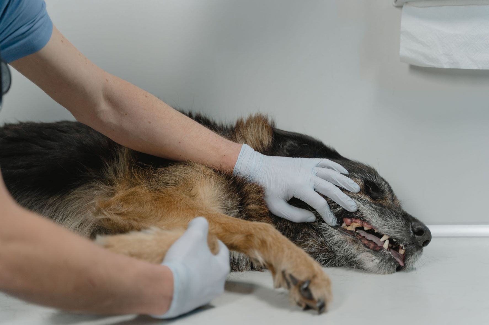

Veterinary
This page's content has been kept separate from our standard directory for easy navigation of its contents. The contents has been devided into several sections, with exotics on the left and mammals on the right. Each of these sections has been futher devided for both eaze of navigation and veterinary speciality.
Avian
Antimicrobials
Formulary
Veterinary Care(Avian Medicine)
Reptiles & Amphibians
Antimicrobials
Formulary
Drug-dose Calculater (Reptiles)
Fish
Cats_and_Dogs
Rodents_and_Mammals
Medication Usage Chart for Rats